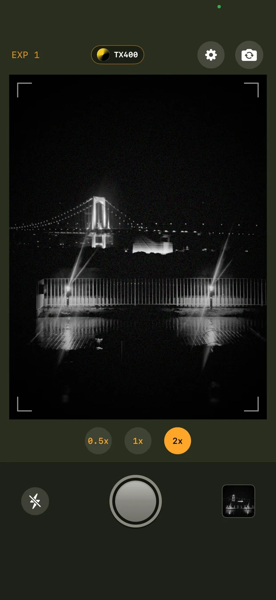
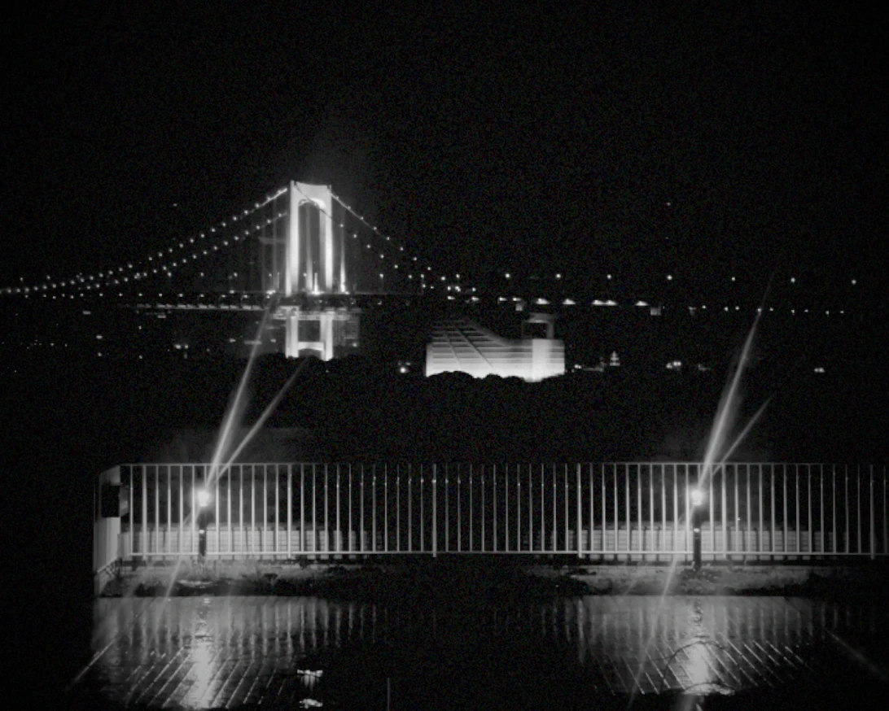
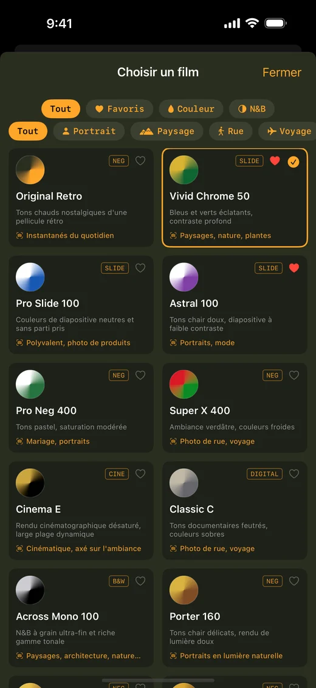

Aujourd’hui,
déjà un souvenir.
Une rue familière, un coucher de soleil, vos proches. Retrouvez la chaleur de l’argentique sur iPhone avec plus de 20 simulations de pellicule et un datage rétro.
Télécharger sur l’App StoreTéléchargement gratuit · Achats intégrés · iOS 17.0+
Trouvez votre pelliculeAN EXTRAORDINARY MEMORY.

Chaque photo devient un souvenir.
Datage rétro 7 segments incrusté

Choisissez votre film.
Choisissez parmi plus de 20 simulations de pellicule, des diapositives éclatantes aux négatifs délavés en passant par le noir et blanc grainé haute sensibilité, chacune calibrée pour restituer le caractère de la pellicule qui l'a inspirée.

Une nouvelle vie pour vos photos.
Retouchez vos photos, utilisez des recettes et enregistrez jusqu’à 20 photos à la fois. Regardez une publicité pour enregistrer gratuitement.
Supprimer les bannières publicitaires · Éviter les publicités avant l’enregistrement dans LAB
Télécharger sur l’App StoreAucun réglage à peaufiner.
Retro Camera 1960 transforme votre iPhone en appareil photo argentique d'une autre époque. Chaque pellicule repose sur des LUT 3D fidèles aux couleurs — la même science colorimétrique utilisée en étalonnage professionnel — combinées à un vrai grain de pellicule, un halo et un vignettage. Pas un simple filtre en un clic.
- 01Rendu colorimétrique par LUT 3D, pas un simple filtre
- 02Plus de 20 simulations de pellicule (diapositive, négatif, noir & blanc, cinéma)
- 03Basculez entre objectifs grand-angle, standard et téléobjectif
- 04Datage rétro façon afficheur 7 segments intégré à chaque photo
- 05Localisation GPS intégrée dans l'EXIF (optionnelle, désactivable)
- 06Conservez l'original non filtré en plus de la photo traitée
Le téléchargement est-il gratuit ?
Téléchargement gratuit · Achats intégrés. Retouchez vos photos, utilisez des recettes et enregistrez jusqu’à 20 photos à la fois. Regardez une publicité pour enregistrer gratuitement.
Supprimer les bannières publicitaires · Éviter les publicités avant l’enregistrement dans LAB
Puis-je retoucher des photos existantes ?
Retouchez vos photos, utilisez des recettes et enregistrez jusqu’à 20 photos à la fois. Regardez une publicité pour enregistrer gratuitement.
iPhone · iOS 17.0+
Votre prochain souvenir commence ici.
Télécharger sur l’App StoreTéléchargement gratuit · Achats intégrés · iOS 17.0+